ALL THAT JAZZ
[Branding, visual identity, motion graphic design]
This series of posters explores contrast through jazz music — a genre full of rhythms,
beats, and swing. Each poster centers around a single instrument (ex: saxophone, trumpet,
piano, drums, etc) that contrast each other using bold, graphic forms, typography, and
music forms. The goal is to evoke and reflect the emotional dualities of jazz.
Displaying the different sounds, vibrations, and instruments throughout each motion graphic,
aimed to interpret the dynamic and contrasting elements of jazz including speed, form, color,
and rhythm. Each poster acts as a standalone visual, but it can also be seen as a cohesive
series together.
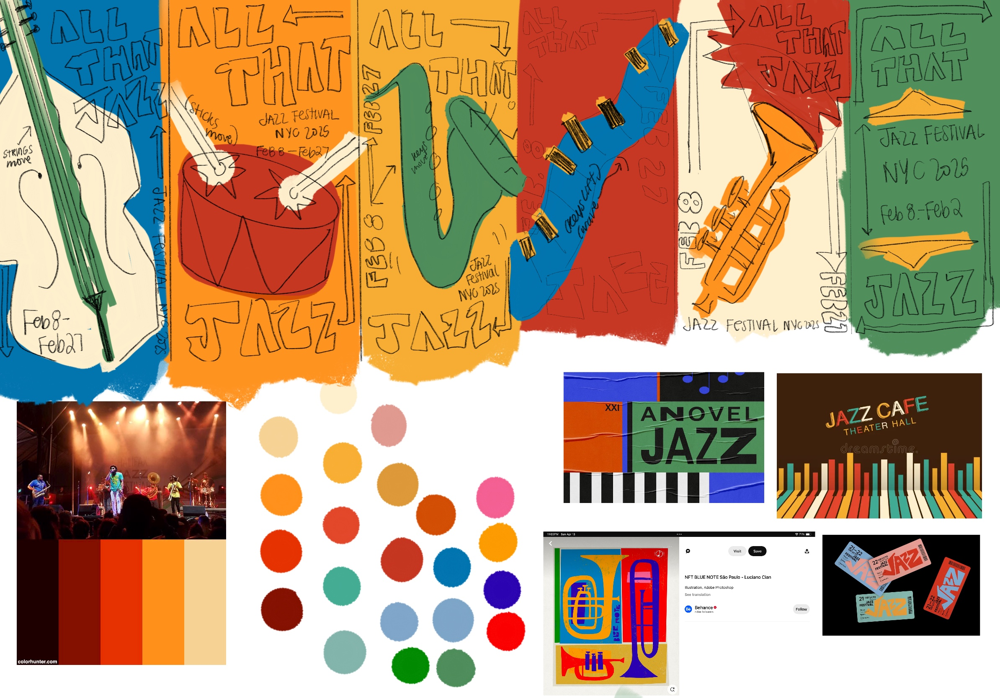


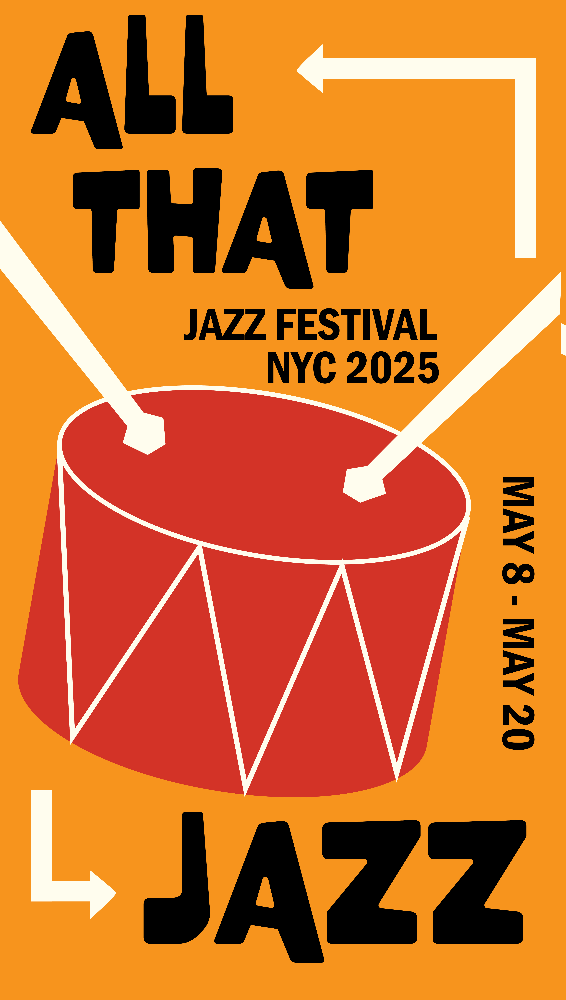
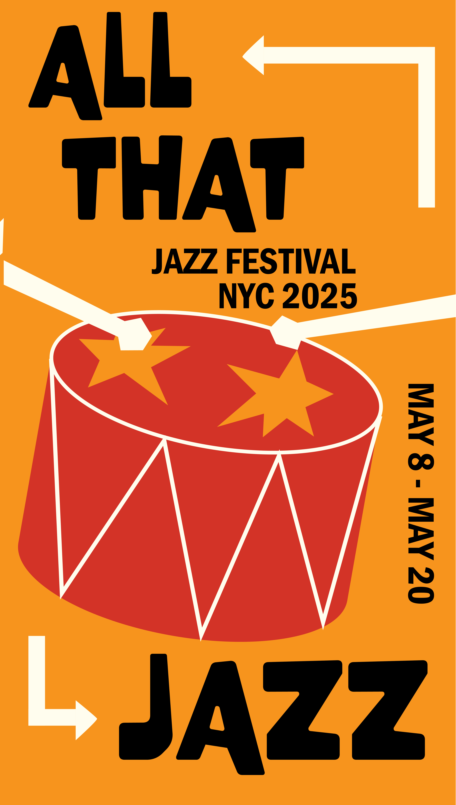
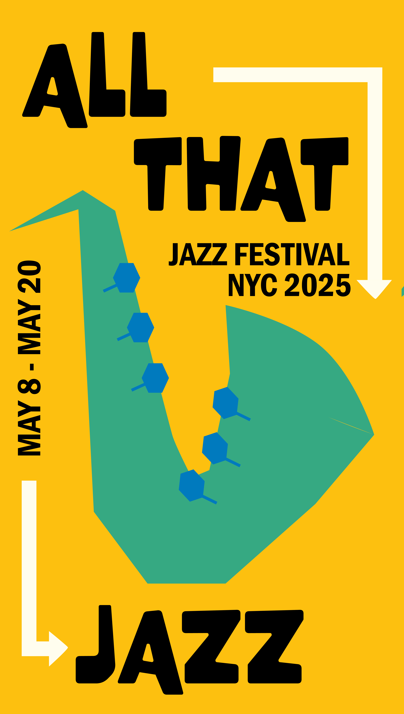
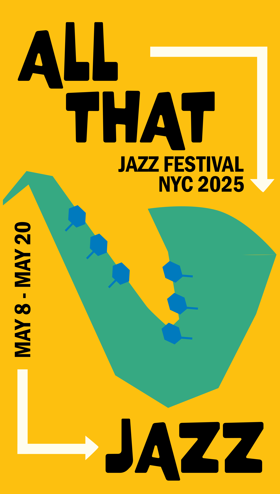
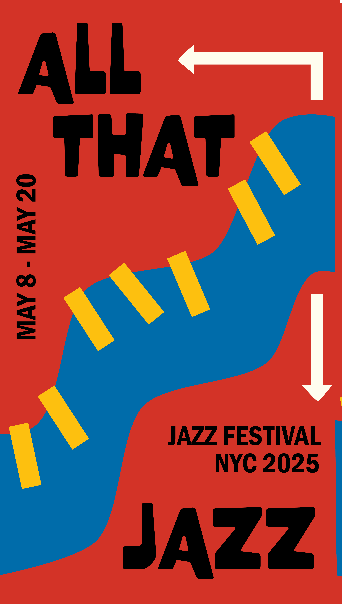
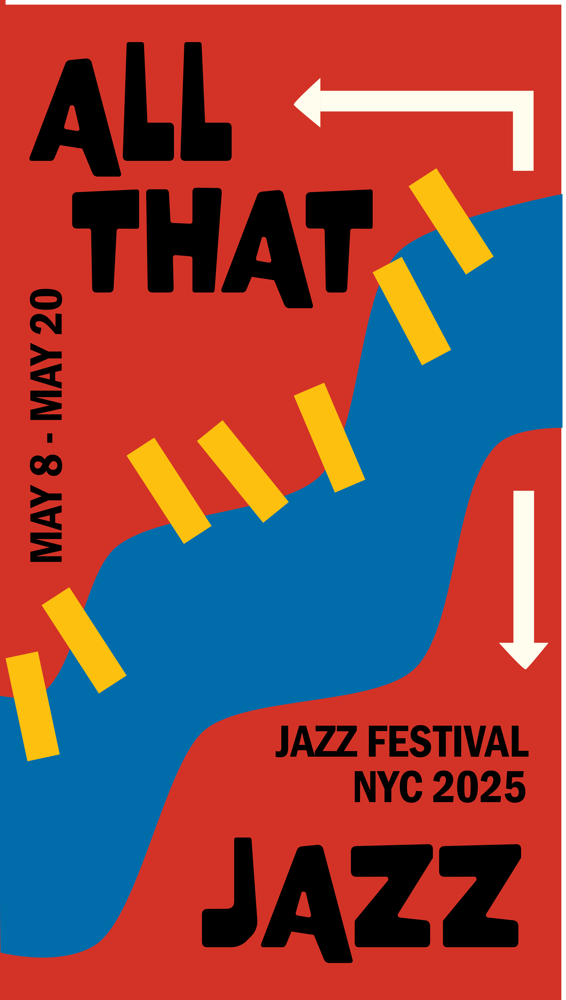
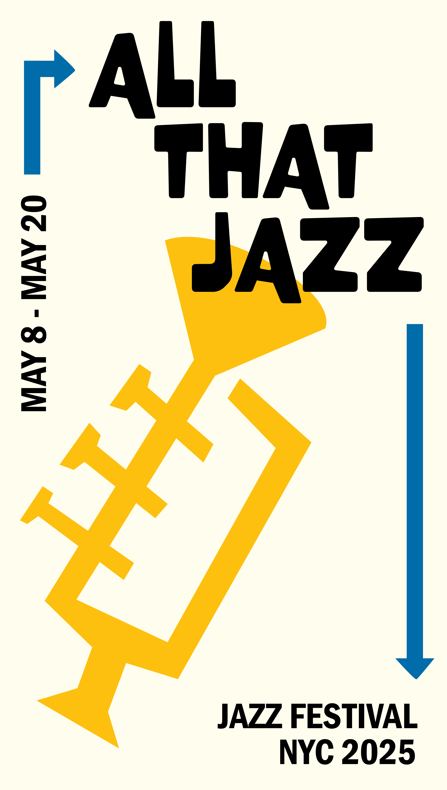
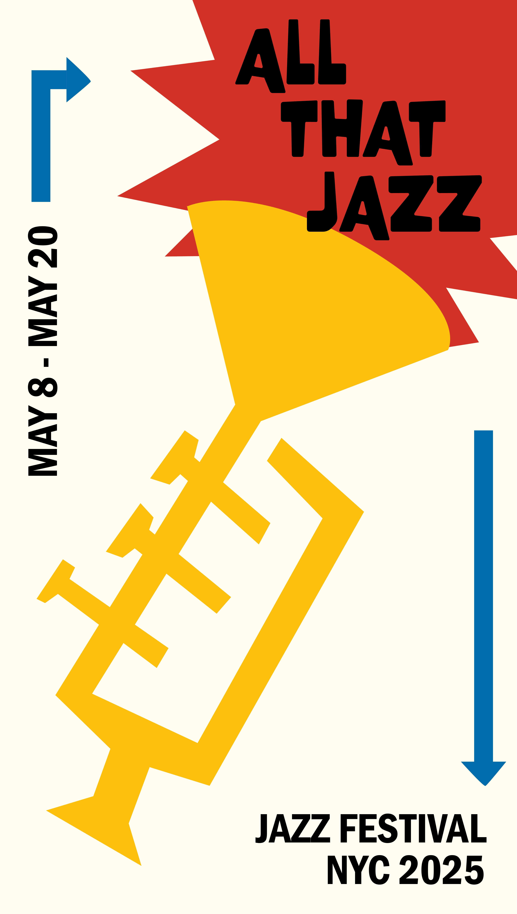
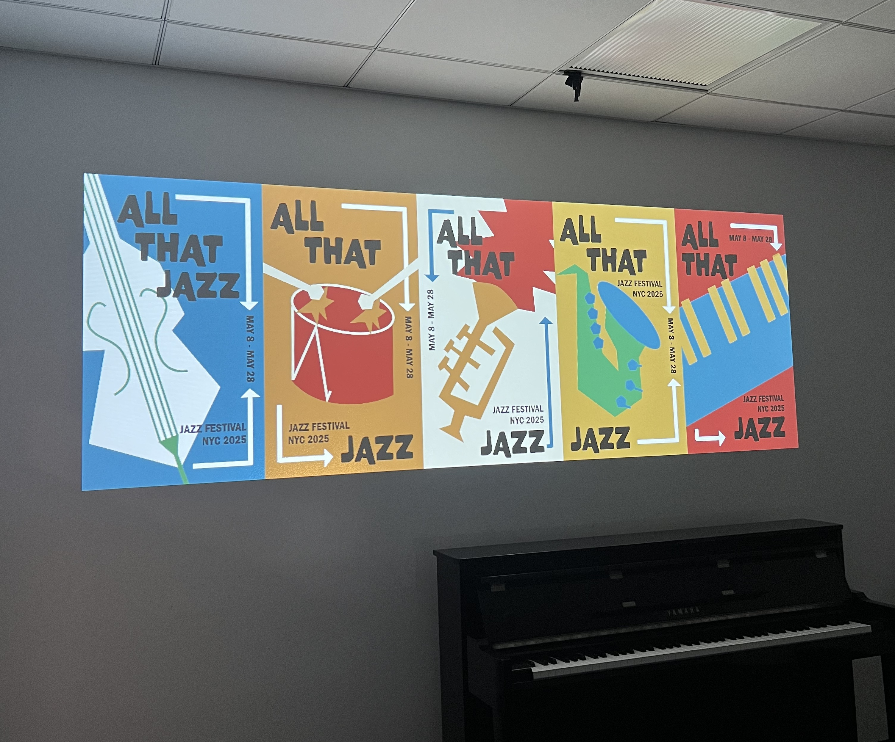
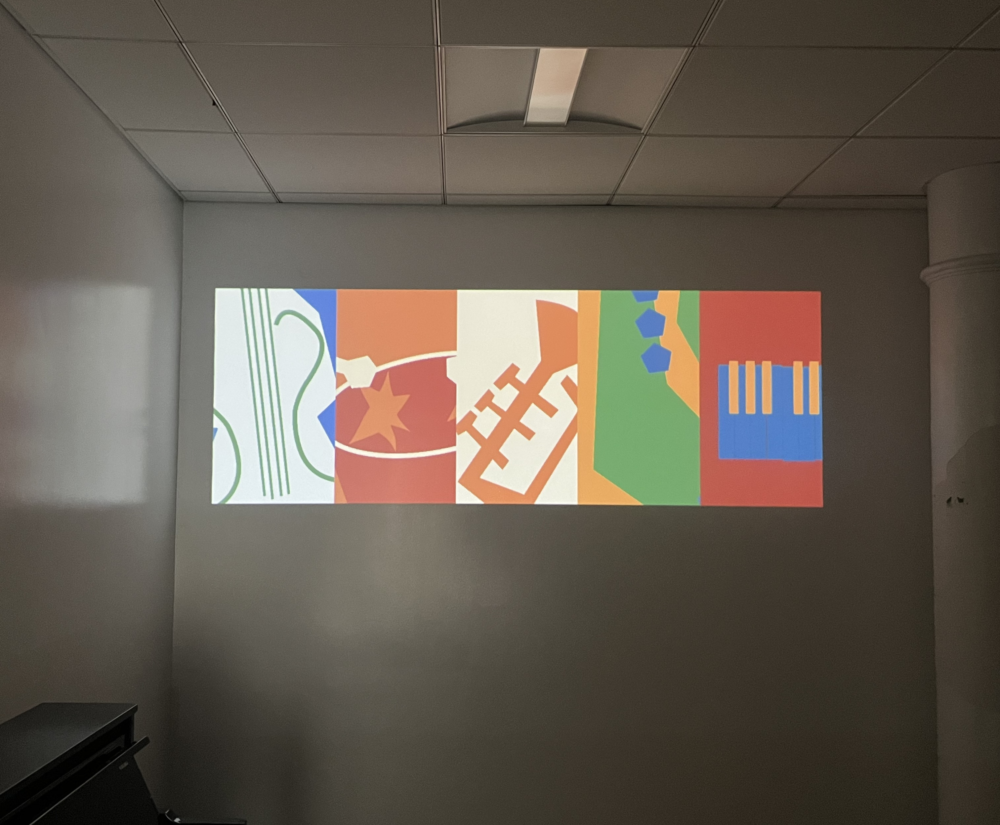